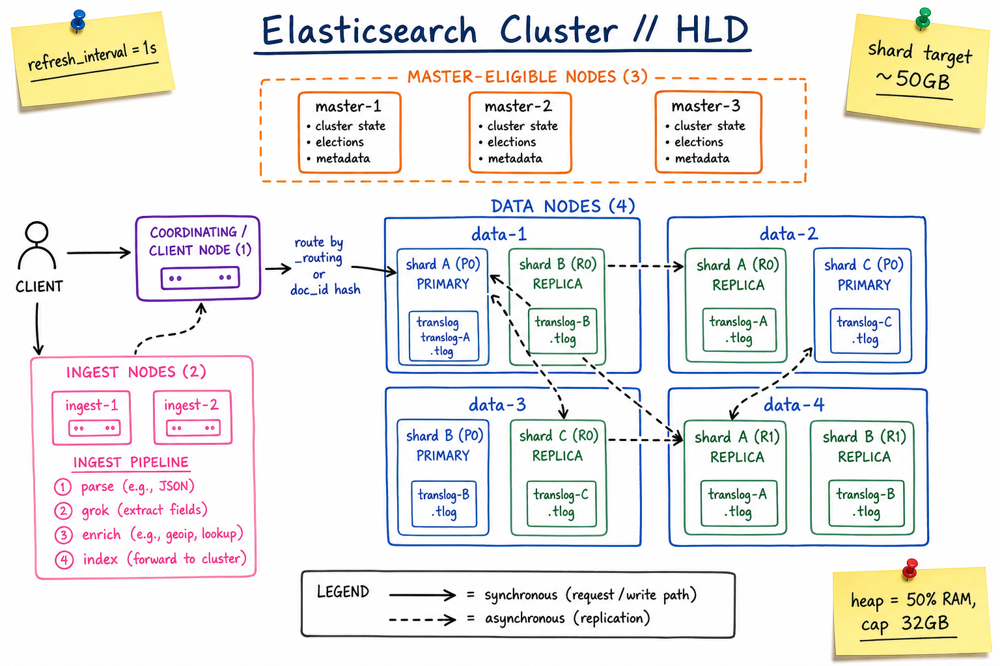
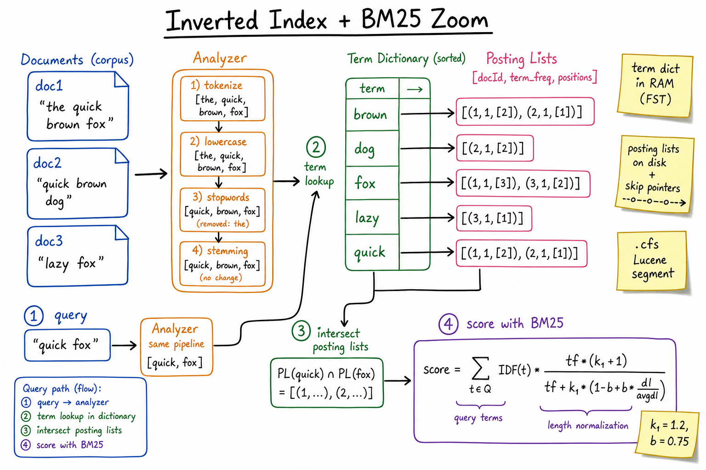

Elasticsearch / OpenSearch // Deep Dive
Distributed search and analytics engine built on Apache Lucene. Inverted-index-backed, near-real-time, horizontally sharded, with rich Query DSL and aggregations. The default answer for full-text search, log analytics, and metric search.

Cluster: master-eligible nodes + data nodes (with primary & replica shards) + ingest nodes + coordinating node. Requests routed by _routing or doc_id hash; replicas updated asynchronously after primary.
01 — Identity
Elasticsearch is a distributed REST-fronted wrapper around Apache Lucene — the same Java library that powers Solr. Each shard is a Lucene index. ES adds: cluster coordination, sharding, replication, REST + JSON Query DSL, and rich aggregations.
OpenSearch is AWS’s fork (since Elastic relicensed to SSPL in 2021). Same wire protocol & mental model; some plugins diverge. For interview purposes treat them as one product.
Where it sits: between your DB and your search box. Source of truth lives in Postgres/Mongo/Kafka. ES holds a denormalised, search-optimised view rebuilt by an indexer. It is not a primary database.
01a — Core Concepts
| Term | Meaning |
|---|---|
| Index | Logical collection of documents (closest analogue: a DB table). Sharded across nodes. |
| Document | JSON object with a _id. The unit of indexing & retrieval. |
| Shard | A physical Lucene index. An ES index is split into N primary shards; each can have R replicas. |
| Mapping | Schema for an index: field names, types, analyzers. Mostly fixed once set. |
| Analyzer / Tokenizer | Pipeline (char filters → tokenizer → token filters) that turns text into terms. E.g. standard, english, edge_ngram. |
| Inverted Index | Term → posting list of (doc_id, term_freq, positions). The core data structure. |
| BM25 | Default relevance scoring (replaced TF-IDF in 5.0). Tunable via k1, b. |
| Query DSL | JSON tree: match, term, bool, function_score, etc. Query context scores; filter context doesn’t (and is cacheable). |
| _source vs stored | _source = original JSON kept verbatim; stored: true = field stored separately for fetch-without-source. |
| Ingest Pipeline | Pre-index transform: parse, grok, enrich, geoip. Runs on ingest nodes. Lightweight Logstash alternative. |
| Refresh / Flush | Refresh = make new docs searchable (default 1s). Flush = fsync translog & create new Lucene segment. |
| Segment | Immutable Lucene file group. Writes create new segments; background merge consolidates. |
| ISR / Replica | Each shard has 1 primary + R replicas on different nodes. Replicas serve reads & act as HA. |
01b — API / Wire Surface
CRUD
PUT /orders/_doc/42 { "user": "alice", "total": 99.50, "tags": ["promo"] }
GET /orders/_doc/42
POST /orders/_update/42 { "doc": { "total": 109.50 } }
DELETE /orders/_doc/42
POST /_bulk
{ "index": { "_index": "orders", "_id": "1" } }
{ "user": "bob", ... }
{ "index": { "_index": "orders", "_id": "2" } }
{ "user": "carol", ... }
Search
POST /orders/_search
{
"query": {
"bool": {
"must": [ { "match": { "description": "red sneakers" } } ],
"filter": [
{ "term": { "tags": "promo" } },
{ "range": { "total": { "gte": 50 } } }
]
}
},
"aggs": {
"by_tag": { "terms": { "field": "tags" } },
"revenue": { "sum": { "field": "total" } }
},
"size": 20,
"from": 0
}
Cluster / admin
GET /_cluster/health # green / yellow / red
GET /_cat/indices?v
GET /_cat/shards?v
POST /_aliases { "actions": [...] }
POST /orders/_reindex { "source": {...}, "dest": {...} }
PUT /_ingest/pipeline/my-pipe { "processors": [...] }
The non-obvious contract: match goes through the field’s analyzer (tokenises & lowercases); term does not (raw equality). Using term on an analysed text field almost never matches — classic interview footgun.
02 — When to Use / When NOT to Use
| Use ES when… | Don’t use ES when… |
|---|---|
| Full-text search, autocomplete, faceted browsing. | You need ACID transactions or single-row consistency. |
| Log / metric / trace search at TB-PB scale (ELK). | Workload is OLTP write-heavy and reads are point lookups by PK (use Postgres / DynamoDB). |
| Time-series with aggregations (histograms, percentiles). | You want it as your source of truth. ES is a secondary view. |
| Geospatial search (geo_point, geo_shape). | You need sub-second update visibility on every write (refresh costs). |
| Mixed structured + free-text queries with relevance ranking. | Heavy joins across many indices — ES has weak joins (parent-child, nested, denormalise instead). |
03 — Architecture
Node roles
| Role | Responsibility |
|---|---|
| Master-eligible | Maintains cluster state (index metadata, shard locations, mappings). One elected master at a time. Run 3 (quorum), no data on them in big clusters. |
| Data | Hosts shards, executes queries, returns hits. The horsepower of the cluster. |
| Ingest | Runs ingest pipelines pre-index. Stateless. |
| Coordinating / client | Receives request, scatters to data nodes holding relevant shards, gathers + merges + ranks results. Any node can do this; dedicated coordinators offload data nodes. |
Write path
1. Client → coordinating node 2. Route by hash(_routing or _id) % num_primary_shards → primary shard 3. Primary indexes locally (in-memory buffer + translog append) 4. Primary forwards to all replicas in parallel 5. Replicas index + append translog 6. Once all in-sync replicas ack → primary acks client 7. Background: refresh (1s) makes docs searchable; flush fsyncs translog
Search path (scatter-gather)
Query phase:
coord → one shard per primary/replica (round-robin) → each returns
top-K (doc_id, _score) from its shard
coord merges & sorts → global top-K doc_ids
Fetch phase:
coord asks owning shards for full _source of those K ids
returns hits to client

Inverted index: analyzer pipeline → sorted term dictionary (FST in RAM) → posting lists (on disk, with skip pointers). Query intersects posting lists, then scores with BM25.
04 — Inverted Index Internals
Two structures
- Term dictionary — sorted map
term → pointer. Stored as an FST (Finite State Transducer): compressed prefix-shared, fits in RAM. Lookup O(len(term)). - Posting list — for each term, the list of
(doc_id, term_freq, positions, offsets). Stored on disk, sorted by doc_id, with skip lists for fast intersection.
Why posting list intersection is fast
query "quick fox" → AND of two posting lists:
PL(quick) = [1, 2, 5, 8, 12, 20, 33, 41, ...]
PL(fox) = [1, 3, 5, 9, 12, 18, 33, 50, ...]
Walk both pointers, advance the smaller. Skip pointers let you
jump past large gaps in O(log N) instead of scanning. Lucene's
"WAND" algorithm prunes documents that can't beat the current
top-K threshold.
Phrases & proximity
Positions stored in the posting list enable phrase queries (“new york” must match adjacent positions) and proximity (slop). Cost: ~30% larger postings.
05 — Refresh vs Flush vs Commit
| Op | What it does | Cost | Default |
|---|---|---|---|
| Index op | Append to in-memory buffer + translog (fsync per op or per N ops) | ~ms | — |
| Refresh | Flush in-memory buffer to a new in-memory Lucene segment. Now searchable. | ~10–100ms per shard | 1s (refresh_interval) |
| Flush | fsync translog + write Lucene commit point. Crash recovery checkpoint. | ~seconds | ~30 min or 512MB translog |
| Merge | Background tiered merge of small segments into bigger ones. Reclaims deletes. | I/O heavy | Automatic |
Near-real-time. Newly indexed docs are not visible until next refresh (1s default). Settingrefresh=wait_foron the index call blocks the caller until visible. For high-write throughput, setrefresh_interval=30s(or-1during bulk reindex).
06 — BM25 Scoring
score(q,d) = ∑t∈q IDF(t) × (tf × (k1+1)) / (tf + k1 × (1 - b + b × dl/avgdl)) k1 (default 1.2) - term-frequency saturation b (default 0.75) - length normalisation tf - term frequency in this doc dl - this doc's length avgdl - avg doc length in the corpus
BM25 vs TF-IDF
- BM25 saturates tf: 100 occurrences of "the" don’t add 100x. TF-IDF was linear.
- BM25 normalises by length so a 1000-word doc doesn’t dominate a 10-word doc.
- Empirically better on TREC; default since ES 5.0.
Customising relevance
boostper query clause ("match": { "title": { "query": "x", "boost": 2 } }).function_score— multiply by recency decay (gauss), geo distance, field value.- Learning-to-Rank plugin for ML-driven re-ranking on the top-K.
07 — Aggregations
Two families. Bucket aggs group docs (terms, histogram, date_histogram, range, geohash). Metric aggs compute over docs (sum, avg, percentiles, cardinality, top_hits). They nest: terms-of-orders → sum-of-revenue.
"aggs": {
"by_day": {
"date_histogram": { "field": "ts", "calendar_interval": "1d" },
"aggs": {
"revenue": { "sum": { "field": "total" } },
"p99_latency": { "percentiles": { "field": "latency_ms", "percents": [99] } },
"uniq_users": { "cardinality": { "field": "user_id" } }
}
}
}
cardinality uses HyperLogLog++ — ~0.5% error on millions of distinct values, constant memory. Exact distinct would scan every doc.
08 — Mapping Pitfalls
Mapping explosion
Dynamic mapping auto-creates a field for every JSON key it sees. If your docs include user-controlled keys (e.g. logs with fields.<random>), the mapping balloons to thousands of fields and the cluster destabilises. Cluster state grows; master heartbeats stall.
Fix: "dynamic": "strict" or "dynamic": false, or use flattened field type which stores arbitrary JSON as a single field.
text vs keyword
| text | keyword | |
|---|---|---|
| Analysed | Yes (tokenised, lowercased) | No (raw value) |
| Aggregatable | No (use .keyword sub-field) | Yes |
| Sortable | No | Yes |
| Use case | Full-text search | Exact match, terms agg, filtering |
Default dynamic mapping creates both: name as text + name.keyword as keyword. Wastes space but is the safe default.
09 — Hot-Warm-Cold Architecture
Hot tier (NVMe, lots of RAM): today's indices, all writes here Warm tier (SSD, less RAM): yesterday + last 7 days, read-only Cold tier (HDD or searchable snapshots): 8–90 days, slow but cheap Frozen tier (S3-backed): 90+ days, paged in on demand
Implemented via Index Lifecycle Management (ILM): a policy that rolls indices over by size/age and migrates shards across tiers via node attributes (data_hot, data_warm, …).
Without ILM, the bill explodes — logs at PB scale on hot SSDs is the most common ES war story.
10 — Query Optimization
Filter context vs query context
Inside bool.filter, clauses contribute nothing to the score and their results are cached in the node query cache. Inside bool.must, clauses score and are not cached.
# Bad: everything scored, nothing cached
"must": [
{ "term": { "status": "active" } },
{ "range": { "created_at": { "gte": "now-7d" } } },
{ "match": { "title": "shoes" } }
]
# Good: scoring only on text; filters cached
"must": [ { "match": { "title": "shoes" } } ],
"filter": [
{ "term": { "status": "active" } },
{ "range": { "created_at": { "gte": "now-7d/d" } } } # /d for cache-friendly rounding
]
Other wins
- Use
preference=user_session_idon read so the same shard replica is hit → reuses page cache. - Use
search_after+ PIT instead offrom/sizefor deep pagination (avoid 10k-result ceiling). - Avoid
wildcard: "*foo*"— leading wildcards can’t use the index. Useedge_ngramat index time for prefix search. - Round
now-7dtonow-7d/d→ same query each minute → cache hit.
11 — Aliases & Zero-Downtime Reindex
An alias is a named pointer to one or more indices. Apps query orders (alias); admins swap which physical index it points to.
# Day 0: orders → orders_v1
PUT /_aliases { "actions": [{ "add": { "index": "orders_v1", "alias": "orders" } }] }
# Day N: schema change. Build orders_v2 via reindex.
POST /_reindex { "source": { "index": "orders_v1" }, "dest": { "index": "orders_v2" } }
# Atomic swap (single cluster-state update):
POST /_aliases {
"actions": [
{ "remove": { "index": "orders_v1", "alias": "orders" } },
{ "add": { "index": "orders_v2", "alias": "orders" } }
]
}
DELETE /orders_v1
This is the only way to change a non-trivial mapping — you cannot ALTER an existing field’s type or analyzer.
12 — Operational Concerns
| Knob | Sweet spot | Why |
|---|---|---|
| Shard size | 10–50 GB | >50GB makes recovery slow; <1GB wastes overhead. |
| Shards per node | ≤ 20 × (heap GB) | Each shard has fixed overhead (~30MB heap). |
| JVM heap | 50% of RAM, cap 32GB | Above 32GB JVM loses compressed-oops; rest is OS page cache for Lucene. |
refresh_interval | 30s for log-style, 1s for search-style | Trades search freshness for index throughput. |
| Replicas | 1 minimum, 2 for HA | Replicas serve reads & survive node loss. |
| Snapshots | Daily to S3 / GCS | Only recovery option for corruption; cluster restore is hours. |
Cluster colours
- Green — all primaries + all replicas assigned.
- Yellow — all primaries up, some replicas unassigned (no data loss, no HA).
- Red — at least one primary unassigned (queries return partial / 5xx). Drop everything and investigate.
13 — Usage Patterns (back to A cheatsheets)
- Search Autocomplete —
edge_ngramorcompletion suggesterfor prefix queries; aggregation for popularity. - Email Service — inbox search over body + attachments + headers; ILM moves old mail to warm/cold.
- Web Crawler — crawled doc index; deduplication on URL keyword field.
- Uber Driver Lookup — geo_point +
geo_distancefilter (though specialised geo-DBs scale better). - Logging / observability — the original ELK use case. One index per day + ILM.
14 — Alternatives
| Alternative | When to pick |
|---|---|
| OpenSearch | Same engine, Apache 2.0 license, AWS-managed. Pick if you want managed + open source. |
| Apache Solr | Sibling Lucene wrapper. Stronger on enterprise search; weaker at log analytics. Older API. |
| Vespa | Yahoo’s engine; superior at vector + ML ranking; harder to operate. Used at TikTok, Spotify. |
| Algolia / Typesense / Meilisearch | Managed, opinionated, sub-100ms typo-tolerant search. Great for product catalogs; less flexible for analytics. |
| Postgres FTS / pg_trgm | If you already have Postgres and dataset < 100GB. No new system to operate. |
| ClickHouse | For OLAP / log analytics where text search is secondary. 10x faster on aggregations, weaker on relevance. |
| Pinecone / Weaviate / Qdrant | Pure vector search. ES has dense_vector + kNN since 8.0 but specialised stores are faster. |
15 — Interview Q&A
Why does Elasticsearch say it’s “near real-time”?
New documents land in an in-memory buffer + translog on write. They’re not searchable until the next refresh, which flushes the buffer into a new in-memory Lucene segment — default every 1 second. That 1-second window is the “near”. You can force visibility with ?refresh=wait_for at the cost of throughput, or push refresh_interval=30s for batch indexing.
How does an inverted index actually work?
Two structures: a term dictionary (sorted, stored as a compressed FST in RAM, term → pointer) and posting lists (per-term arrays of (doc_id, tf, positions) on disk with skip pointers). A query analyses input into terms, looks each up in the dictionary, then intersects the posting lists with a two-pointer walk + skip pointers. BM25 scores survivors. The whole structure is immutable per segment — deletes mark a bitset and are reclaimed at merge time.
BM25 vs TF-IDF — what changed?
TF-IDF was linear in term frequency — 100 hits on “the” scored 100× one hit. BM25 introduces saturation via k1 (default 1.2), so additional occurrences add diminishing value, and length normalisation via b (default 0.75) so a 1000-word doc doesn’t out-score a focused 10-word doc on the same term. Empirically better on benchmarks; default since ES 5.0.
What’s the difference between match and term?
match sends the query text through the field’s analyzer (tokenises, lowercases, stems). term does not; it’s an exact lookup in the inverted index. On an analysed text field, term: {name: "Alice"} won’t match the doc "Alice" because the indexed term is alice. Use term on keyword fields, match on text fields.
How do you size shards?
Aim for 10–50GB per shard. Below 1GB the per-shard overhead (~30MB heap, dozens of files) dominates. Above 50GB recovery becomes painfully slow and queries on that shard get a long tail. Total shards per node should be ≤ 20 × heap_GB. You cannot change number_of_shards on an existing index — you must reindex into a new one (alias swap).
Why is the cluster yellow?
All primary shards are assigned, but at least one replica is not. Common causes: only 1 data node (replicas refuse to coexist with their primary on the same node), a node just left and the cluster hasn’t finished re-replicating, or cluster.routing.allocation.disk.watermark blocking allocation because a node is > 85% full. Yellow is degraded HA, not data loss; red is.
How does pagination work and why does deep paging break?
from + size requires every shard to return from+size hits to the coordinator, which sorts and trims — O((from+size) × shards) memory. ES caps total at 10,000 by default (max_result_window). For deeper paging use search_after with a Point-In-Time (PIT) for consistency, or the scroll API for snapshot exports (no relevance / sort changes mid-scroll).
How would you do zero-downtime reindexing after a mapping change?
(1) Create orders_v2 with new mapping. (2) POST /_reindex from v1 to v2 (can throttle with requests_per_second). (3) Dual-write new docs to both indices during the reindex window, or capture the diff via a timestamp. (4) Atomically swap the orders alias from v1 to v2 in a single _aliases call. (5) Verify, then delete v1. The alias is the trick — clients never know.
What is “mapping explosion” and how do you prevent it?
Dynamic mapping auto-adds a field for every JSON key. If users can inject arbitrary keys (e.g. labels in observability data), the mapping grows unbounded, cluster state blows up, master heartbeats start timing out, and the cluster wedges. Prevent with "dynamic": "strict" or "dynamic": false, index.mapping.total_fields.limit, or the flattened field type which stores nested JSON as a single field.
Why isn’t ES your primary database?
No multi-document ACID transactions. No foreign keys. Refresh-based visibility (NRT, not RT) breaks read-your-writes. Replica acks happen async; a recent write can disappear if the primary dies before replicas catch up. Mapping is largely immutable. Operational footprint is heavy. ES shines as a denormalised, search-optimised view rebuilt from a real source of truth (Postgres CDC, Kafka).
How do filter context and the query cache interact?
Clauses inside bool.filter don’t contribute to _score and their bitset results are cached in the node query cache, keyed by clause. Subsequent queries reuse the bitset (fast AND). Clauses in bool.must score and aren’t cached. Rule of thumb: anything that’s a yes/no constraint (status, date range, tags) belongs in filter; only the bits the user types belong in must. Round date math (now-7d/d) so the cache key stays stable.
SDE-2 vs SDE-3 answer differentiation?
| SDE-2 | SDE-3 |
|---|---|
| Indexes, shards, replicas, query DSL, BM25 | + FST term dictionary, refresh/flush/merge lifecycle, translog & ack semantics, mapping explosion mitigations, ILM hot-warm-cold, alias-swap reindex, filter-context cache key stability, deep-paging via PIT + search_after, why ES is a view not a DB |